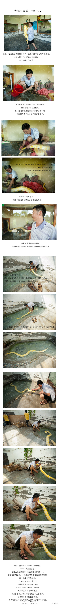

这样啊.这么多年一直用错了. 最近你惨淡经营了没有? //@海边的小杂货铺: 问题是大部分这些被误用的词最后就将错就错了。@赵所生:【“惨淡经营”并不惨】某报报道必胜客经营状况：“它在欧美一直惨淡经营，近两个月已亏损3亿英镑。”显然将“惨淡经营”与亏损、悲惨义等同了起来。这是望文生义。其实“惨淡经营”原指绘画前先用淡色勾轮廓，苦心构思格局，后引申指苦心谋划并从事某事，如《盛世危言》：“不惨淡经营便轻率命笔。”
企业让员工掏腰包补偿工作中造成的财产损失,这合法吗? 要是都这样，证券公司那些交易员每个月还有钱拿吗？ //@闾丘露薇: 嗯。 //@邱致中微博: 失误不是实习生才会有，高级经理也会有。他们经营失误可能带来的损失大得多。比如，因他们对实习生不仁及处理此事的失误引起了顾客对酒店的杯葛，这个损失就@邱致中微博:一家五星酒店一位月薪1000元实习生不慎打破一个水果桶。酒店让她赔了700元。实习生和普通员工做一样的事和工时。他们的超低薪实际己把新手容易失误的风险考虑在内。等于他们己用本来可以得到的部分报酬交给酒店买了失误保险。处罰应是象征性的以防止再失误为目的。这种不给生路的处罰不公。令人震惊！
我觉没收没有问题，法律需要严格遵守。如果你不能没收饲养来源不明的黄金蟒，该怎么禁止来源不明的东北虎虎皮呢？//@fanguo9: 欧美遛蛇也违法吧，不知道会不会坐牢 //@out_star:把蛇还给他！//@_cc9: 把蛇还他吧//@M_miyata: 把蛇还给他吧！//@deerdiana: 把蛇还给他吧！//@语过添情02:转发微博@都市快报:【把蛇还他吧】江苏常州遛蛇哥不但蛇被没收，连工作也丢了，他已打包好行李准备回老家。“他当初说常州是块宝地，如今却容不下一个他，还要了他的蛇。他工作的地方也把他开除了。”资料补充：黄金蟒在欧美国家及我国港台地区已作为宠物合法饲养，野生条件下，黄金蟒无法存活。@奥垮垮 